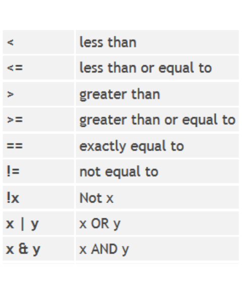
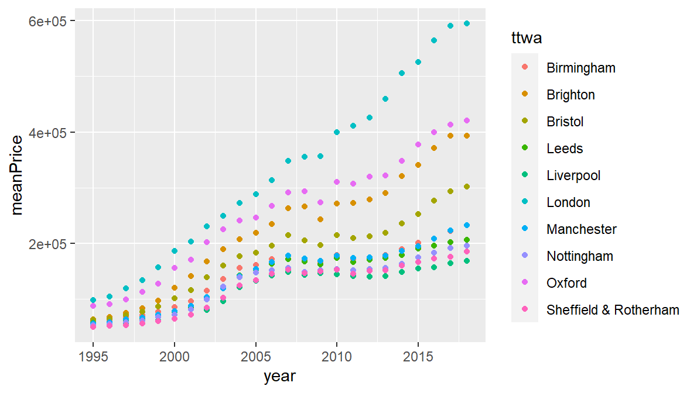
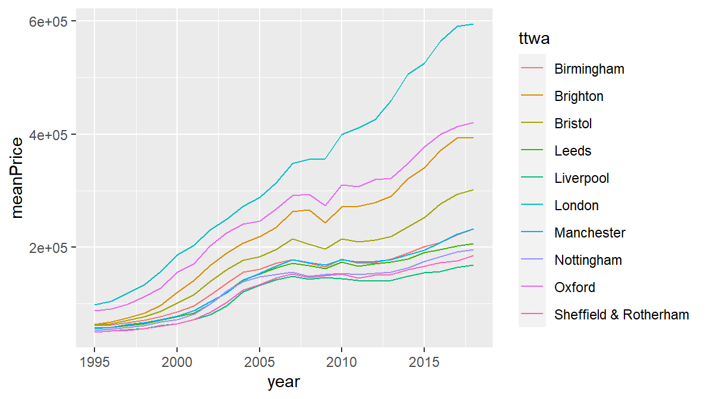
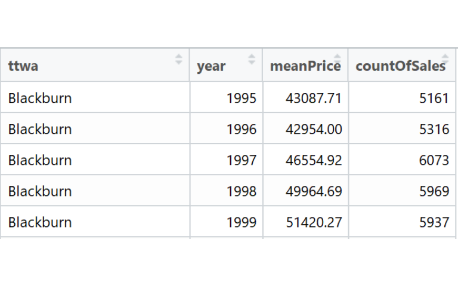
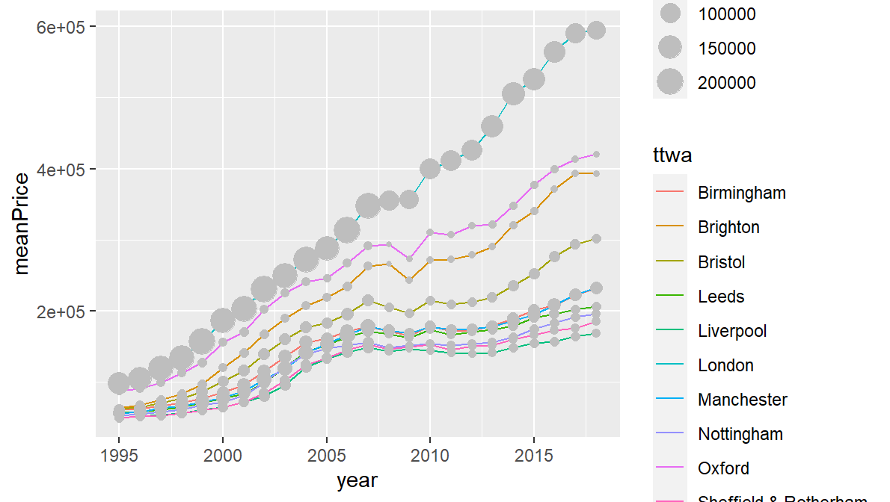
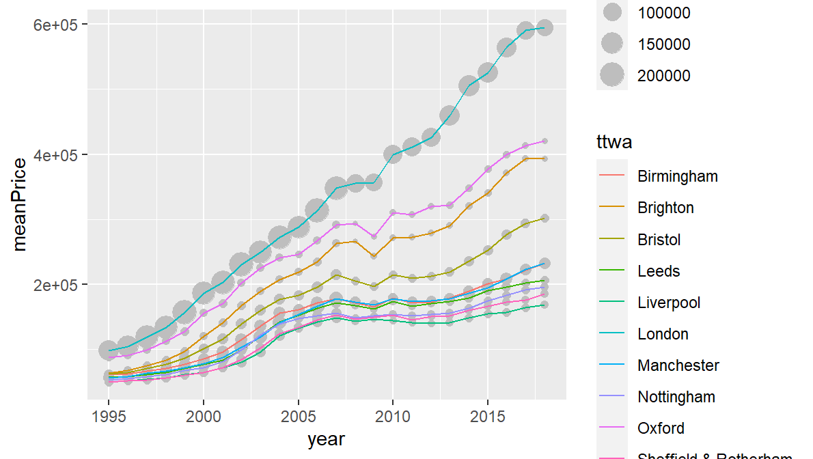

11 Getting started with dplyr and piping
We’re going to be mainly using dplyr to reshape our data into different forms for the visualisations. (We’ve already loaded this library as part of the tidyverse package.)
Before we get to dplyr itself -
11.1 Piping!
Piping is magic: it will make everything spectacularly easier and tidier.
Specifically, this is the pipe operator. It loads with dplyr and looks like this:

A quick recap: pretty much everything in R is a function. For example, to find the square root of a number, use the sqrt function:
sqrt(100)## [1] 10Functions can nest in functions. If, for some reason, you wanted to find the base 10 log of the square root of 100, you could nest like this:
log10(sqrt(100))## [1] 1And so on, if you had more complex things to accomplish. The pipe operator makes this much more intuitive and readable. So instead of the above, we can do this:
100 %>% sqrt()## [1] 10100 %>% sqrt() %>% log10()## [1] 1So what we’re doing here: piping the result from one function into the next until we get the output we’re after. The number 100 is piped into the sqrt function - the output from that function (10) is piped into the log function.
The power of this is:
- It lets us create a conveyor belt for what we do with data in a way that can very easily be changed at any stage in the process.
- dplyr is designed with this in mind.
As with the assignment operator, typing percent-more-than-percent every time you want the pipe operator is a pain: so RStudio has another shortcut key.
This time it’s: CTRL + SHIFT + M. Try this in the next bit of coding.
This is also on your one page shortcut key guide.
11.2 dplyr’s verbs
We can use the pipe operator to link dplyr verbs together - these are functions that reshape the data in various useful ways. We’ll go through them one by one and end with a ggplot.
Let’s start by finding a summary statistic. We’ll find the average price in the housing data.
It’s good practice to have each dplyr verb on its own line. Notice how RStudio helps with this too: pressing return at the end of one line, after the pipe, automatically indents the next line. We’ll do the same with ggplot in the next section.
sales %>%
summarise(mean(price))## # A tibble: 1 x 1
## `mean(price)`
## <dbl>
## 1 225522.Verb 1: summarise. This passes all values from the column name you pass - in this case price - and we tell it to find the mean. It then gives you a single row back with the summary in.
Notice here: dplyr (like almost all tidyverse functions) takes in bare variable names. It knows the variable is from sales as we’ve just piped that in.
But that’s the average price for the whole time range - what about one year?
Verb 2: filter. We can filter by year. So we’ve now got two pipe operators:
sales %>%
filter(year == 2018) %>%
summarise(mean(price))## # A tibble: 1 x 1
## `mean(price)`
## <dbl>
## 1 390511.The filter verb uses logical operators to query each row in the data. The full list of these is on the data wrangling cheatsheet. Here they are again:

Note especially the double equals we just used: this allows us to find exact matches for values and text (in this case, matching to 2015).
A quick reminder of how R uses logical operators to create TRUE/FALSE vectors. (TRUE/FALSE values are also known as boolean values.) Here’s an illustration of two logical operators checking their condition against each row of the chosen variable:

So all filter does is take in a vector like this …
ttwa=='Bradford'## [1] FALSE FALSE FALSE TRUE TRUE TRUE TRUE FALSE FALSE FALSE… and then use that to keep the TRUE values. This is worth repeating, as once that’s clear, you can produce any kind of boolean vector you like to filter the data. More on this shortly.
So: filter picked out one particular year. But what if we want average price for each year?
Verb 3: group_by. This will group the data by the category or categories we give it. The next function will then apply to each group. You’ll get one row per group with the mean in:
sales %>%
group_by(year) %>%
summarise(mean(price))## # A tibble: 24 x 2
## year `mean(price)`
## <dbl> <dbl>
## 1 1995 79425.
## 2 1996 84693.
## 3 1997 94675.
## 4 1998 104499.
## 5 1999 120137.
## 6 2000 137448.
## 7 2001 151563.
## 8 2002 173274.
## 9 2003 188621.
## 10 2004 212300.
## # ... with 14 more rowsThat’s given us average price per year - but has just showed some of them in the console. To be able to work with this returned dataframe, we need to assign it to a variable name:
saleSummary <- sales %>%
group_by(year) %>%
summarise(mean(price))You’ll see saleSummary has appeared in the environment pane: click on it to view the new summary data.
One more thing before making another graph: if we want to find out average price per year and per city/ttwa, just include both in the group_by function.
We’ll add one more thing here too. dplyr defaults the summary variable name to mean(price) - but we can set the name ourselves in summarise if we want something more sensible:
saleSummary <- sales %>%
group_by(ttwa,year) %>%
summarise(meanPrice = mean(price))## `summarise()` has grouped output by 'ttwa'. You can override using the `.groups` argument.saleSummary now has one column each for ttwa and year in long format, each with a price average. Which is exactly what we need to map each of those to aesthetics in ggplot.
Note also: an advantage of this separate-line approach to coding is: it’s easy to try different things, keep them and comment them out. So for instance, for the previous code, we could have kept the filter verb in place in case we wanted to come back to it:
saleSummary <- sales %>%
#filter(year == 2018) %>%
group_by(ttwa,year) %>%
summarise(meanPrice = mean(price))This can now go straight into ggplot:
ggplot(saleSummary, aes(x = year, y = meanPrice, colour = ttwa)) +
geom_point()
11.3 And a few extras while we’re here…
There are a number of other dplyr verbs and we’ll cover some of them below, but for now, let’s just make some additions to what we’ve done, to introduce some new ideas.
- Using another geometry
First: we can use a different geometry - we don’t have to stick to points. With data over time, it makes sense to link time points with a line. As you might guess, the geom_line geometry will do this. Comment out geom_point for now and add it:
ggplot(saleSummary, aes(x = year, y = meanPrice, colour = ttwa)) +
geom_line()
#geom_point()- Layering geometries
You’re not limited to one geometry: you can layer them. So if we just un-comment geom_point (and make sure there’s a plus at the end of geom_line):
ggplot(saleSummary, aes(x = year, y = meanPrice, colour = ttwa)) +
geom_line() +
geom_point()
Note that our aesthetic mapping of colour to TTWA has applied to both lines and points. More on that shortly.
What if we want geom_point to represent something different? Well…
- Summarising for more than one variable
Say we want to show the number of sales for each TTWA in each year. The first thing to do is count the sales via dplyr’s summarise. This requires an update to our previous dplyr code - just add another summary variable to the summarise function:
saleSummary <- sales %>%
group_by(ttwa,year) %>%
summarise(meanPrice = mean(price), countOfSales = n())## `summarise()` has grouped output by 'ttwa'. You can override using the `.groups` argument.You’ll see we now have countOfSales as well as meanPrice:

What does n() do? It’s dplyr shorthand for ‘number of observations’: if we’ve grouped the data, it will give us the number of observations per group. (You can see this and other summarise functions on page 2 of the dplyr cheatsheet.)
Now we have a count of sales, we can use this directly in geom_point. This is done by using the aes function in the geometry itself:
ggplot(saleSummary, aes(x = year, y = meanPrice, colour = ttwa)) +
geom_line() +
geom_point(aes(size = countOfSales))
The size of the points now represents count of sales. ggplot gives it its own legend.
Two things to note here:
- If you’ve mapped an aesthetic in the top ggplot function it will cascade to all other geometries. However, we can over-ride this within those geometries using their own aes function.
- The order of geometries determines which draws first. This can be used to control the look. We’ll do that next.
- The order of drawing and deciding where to map aesthetics
Say we don’t want colour to be mapped to both points and lines. There are a couple of options - one (the most flexible) is to overwrite the colour mapping in geom_point by choosing our own colour directly.
- We do this by setting the points’ colour outside of aes to what we want. We’re not mapping to any variable this time, just setting it to a single value. There are a list of named colours we can use, including ‘grey’ (more on this list below):
ggplot(saleSummary, aes(x = year, y = meanPrice, colour = ttwa)) +
geom_line() +
geom_point(aes(size = countOfSales), colour = 'grey')
The general principle here:
- Each list of aesthetics under the geometries on the cheatsheet can be either mapped to a variable (by including them in the aes function ) or set directly to a single type.
- Setting these within a geom has the effect of over-riding the cascading value.
In this graph, points are drawn over the lines. This might look better if they were under them. To do this, just change the order. Having everything on separate lines makes this a little easier, though be careful to make sure pluses are in the right place.
Also: remember you can use ALT + up/down arrows to move lines of code. So, shifting geom_point behind geom_line (and remembering to shift the plus as well…):
ggplot(saleSummary, aes(x = year, y = meanPrice, colour = ttwa)) +
geom_point(aes(size = countOfSales), colour = 'grey') +
geom_line() # <<< moved this down one line and moved the plus too